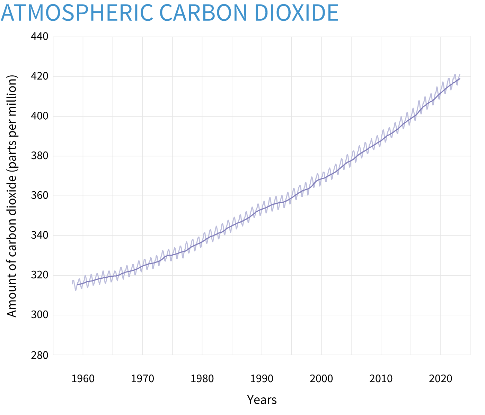
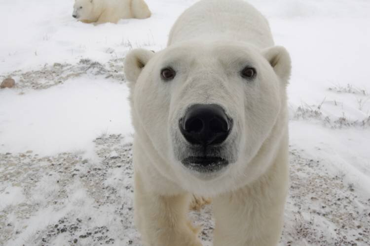

What is happening?
Greenhouse gases, such as carbon dioxide, methane, and water vapor, trap heat in the Earth’s atmosphere, preventing it from escaping into space. This is known as the greenhouse effect. While the greenhouse effect is a natural phenomenon and necessary for life on Earth, human activities such as burning fossil fuels and deforestation have significantly increased the concentration of greenhouse gases in the atmosphere, leading to an enhanced greenhouse effect. As a result, the Earth’s temperature has been increasing steadily over the past century, causing a phenomenon known as global warming. This increase in temperature is causing the Arctic ice to melt at an alarming rate. The Arctic region is particularly vulnerable to global warming because it is warming at a faster rate than other regions of the world due to feedback mechanisms that amplify warming in polar regions. According to Climate Change: Atmospheric Carbon Dioxide, humanity has steadily increased the amount of carbon dioxide they produce every year.
 The amount of carbon grew about 100 times in less than a century.The Effects Of Global Warming
The melting of Arctic sea ice has severe consequences on the region’s ecosystem, including the loss of habitat for several species, including polar bears, ringed seals, and walruses. The melting of the Arctic ice also has a significant impact on sea level rise, as the ice sheet in Greenland and the Arctic glaciers melt, adding more water to the oceans.
 A bear trying to stay above water.The rising sea levels have significant impacts on coastal cities around the world. Higher sea levels increase the risk of coastal flooding, erosion, and storm surges. This can damage infrastructure, buildings, and homes, leading to economic losses and displacement of people. The increased risk of flooding can also affect freshwater resources and cause saltwater intrusion, which can harm agriculture and natural habitats. Within the next century or two, a several cities will be uninhabitable. For example, Venice, Italy, has roughly a century before the city is fully submerged.
 A sunken city.
A sunken city.